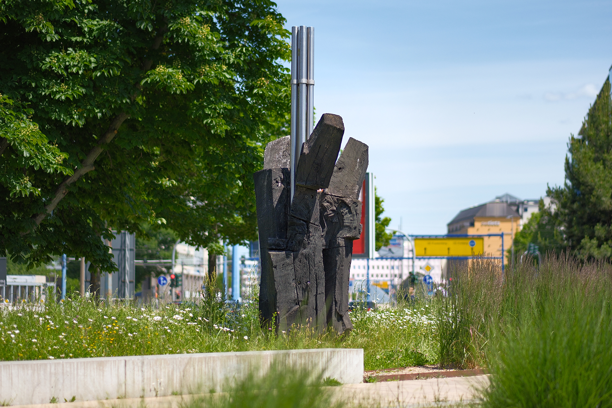
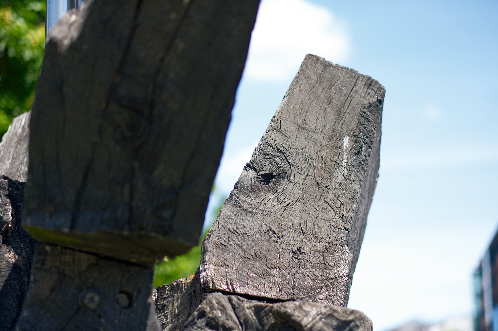
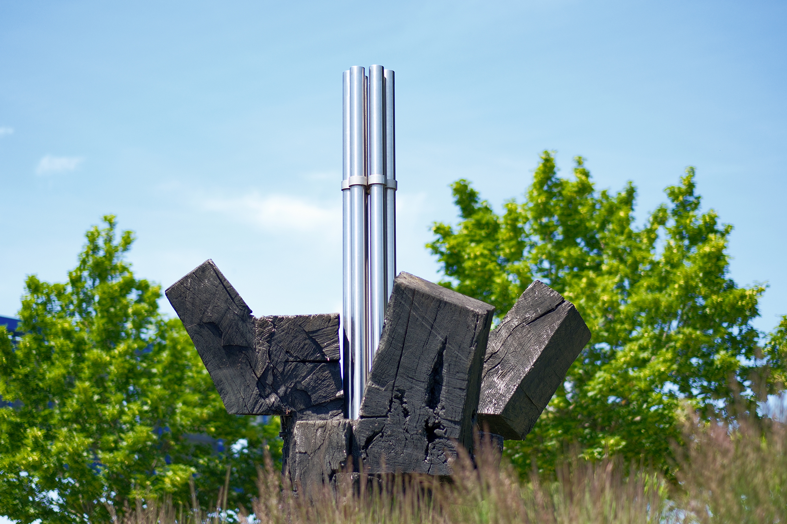
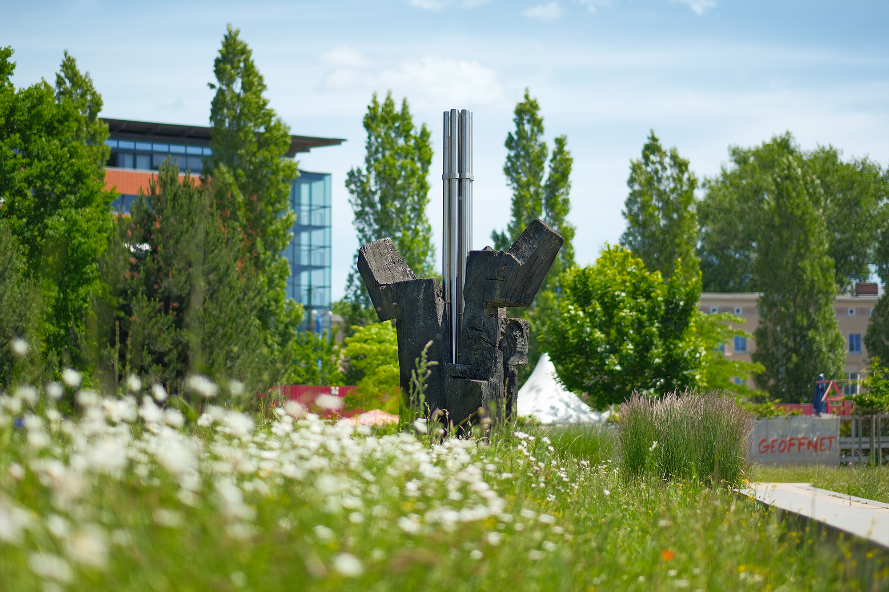

Recherche und Werkbeschreibung: Roman Pilz. Text und Fotografien wechseln sich wie in einem Magazin ab. Ein Klick auf ein Bild öffnet die Großansicht.
"Ein Stück Holz, das ist vor allem eine Idee, die einen erfasst... Erst allmählich bin ich von der undurchdringlich erscheinenden Masse, die so etwas Gewachsenes darstellt, zur Modulation der Formen gekommen, und ich bin mir gar nicht mehr so sicher, wo die Grenze zwischen Kunst und Natur, Werden und Ursprung zu ziehen ist.“
So umschreibt der Schwarzenberger Holzgestalter Hans Brockhage, der seine Anfänge in Seiffen, dem Zentrum erzgebirgischer Holzhandwerkskunst, genommen hat und dann über Dresden und Berlin wieder in seine Heimat zurückkehrte, seinen Weg zur Freien Form, die ganz und gar von seinem Material "Holz" ausgeht. Selbst wenn er in Beton oder Metall arbeitet, sind es die urwüchsigen und lebendigen Strukturen des Holzes, die ihn faszinieren.
Auch die "Mooreiche" im heutigen Moritzpark, nahe des Chemnitz-Ufers, ist ein wenig herumgekommen. Obwohl der Name es andeutet, ist es wohl keine Mooreiche, die Brockhage hier verarbeitete. Auch wenn er dieses wertvolle, über Jahrhunderte halbverwitterte und -versteinerte Material, das manchmal in Flussbetten oder im Tagebau (z. B. in Bitterfeld) gefunden wird, außerordentlich schätzte, verwendete er hier wohl jüngeres Eichenholz, das er spaltete, sägte und fügte, um es abschließend mit schwarzem Pigment zu färben.
Hans Brockhage wurde 1925 in Schwarzenberg im Erzgebirge geboren und verstarb 2009 am selben Ort. Brockhage gilt auf dem Gebiet des "Umgangs mit Holz", wie er seine Arbeit selbst bezeichnete, als maßgeblicher Neugestalter eines zeitgemäßen Verhältnisses von Tradition und Form insbesondere. Er wirkt insbesondere in Sachsen und der ehemaligen DDR – ist aber bereits vor dem Fall der Mauer auch im Westen bekannt.
Sein künstlerisches Werk befindet sich in Sammlungen und Museen sowie in öffentlichen Räumen Europas. Er absolvierte nach seinem Kriegsdienst ab 1945 zunächst eine Lehre zum Holzbildhauer und Drechsler in Seiffen. Anschließend studiert er von 1947 bis 1952 an der Hochschule für Bildende Künste in Dresden.
Seine Lehrer waren Will Grohmann, Hans Theo Richter, Ludwig Renn, Theodor Artur Winde, Mart Stam und Marianne Brandt. Von Stam und Brandt wurde ihm die Formgestaltung des Bauhauses vermittelt – unter der Aufsicht des Niederländers Stam entsteht so 1950 der bekannte Schaukelwagen, ein Kindermöbel und Spielgerät, das 1957 die im Umfeld der Hochschule für Gestaltung in Ulm entwickelte Auszeichnung "spiel gut" erhält und mittlerweile international als Designklassiker gewürdigt wird. Mit der Chemnitzer Gestalterin Marianne Brandt verband ihn bis zu ihrem Tod eine freundschaftliche und fachliche Beziehung.
Ab 1955 arbeitet Brockhage als freiberuflicher Formgestalter in Schwarzenberg, wo er auch sein Atelier einrichtet. Von 1967 bis 1977 ist er als Dozent an der Hochschule für industrielle Formgestaltung an der Burg Giebichenstein in Halle tätig. 1977 wird er zum Professor an der Fachschule für angewandte Kunst in Schneeberg (heute Teil der Westsächsischen Hochschule Zwickau) berufen.
Er leitet dort bis 1990 die "Holzklasse", die er bereits ab 1968 mit aufbaute. In Chemnitz ist er 1973 Mitbegründer der "galerie oben" und langjähriger Vorsitzender der Verkaufsgenossenschaft bildender Künstler. Neben seiner Lehrtätigkeit und Arbeit beginnt Brockhage Ende der 1960er Jahre ein künstlerisches Werk, das sich, ausgehend von Aufträgen zur Wandgestaltung in baugebundenen Arbeiten aus Holz und Sichtbeton, über monumentale Skulpturen für den öffentlichen Raum schließlich ab Mitte der 1980er Jahre zu expressiven, freifigürlichen Arbeiten und Montagen in Eichenholz, Beton und Bronze entwickelt.
Studienreisen und Ausstellungen führen ihn bereits zu DDR-Zeiten nach Kuba, Russland und Finnland, aber auch nach Westdeutschland und Frankreich. Ab 1990 nimmt er auch an internationalen Kunstmessen in Basel, Köln und Karlsruhe teil. Seine Arbeiten sind bundesweit in zahlreichen öffentlichen Sammlungen und als Kunst im öffentlichen Raum vertreten.
In seinem ehemaligen Atelier in Schwarzenberg wird sein Nachlass bewahrt. Wichtige Retrospektiven, beispielsweise zu seinem 90. Geburtstag 2015 in der Neuen Sächsischen Galerie in Chemnitz und im Mauer-Mahnmal des Deutschen Bundestages, halten Brockhages wichtigen Beitrag zur abstrakten Bildhauerkunst in Erinnerung.
Die wichtigsten Arbeiten Brockhages in Chemnitz sind die Wandgestaltung im Foyer der Stadthalle (1971), die Ausstattungen für das Gemeindezentrum Markersdorf der Dietrich-Bonhoeffer-Kirchgemeinde (1982–1983), vor dem Marianne-Brandt-Haus auf dem Kassberg (2003) und im Garten der Neuen Synagoge an der Stollberger Straße (1991/2000).
Vielleicht war das seltene Mooreichenholz einfach zu wertvoll für die Aufstellung im Außenbereich, wo Witterung und Wasser das Holz zwangsläufig, aber durchaus intendiert, weiter "bearbeiten"? Oder es war gerade nicht in ausreichenden Mengen verfügbar für das Brunnen-Projekt im letzten fertiggestellten Neubaugebiet auf der Markersdorfer Kuppe im Wohngebiet "Fritz Heckert"?
Dort im heutigen Stadtteil Markersdorf stand die Skulptur nämlich etwa 20 Jahre, nachdem sie wahrscheinlich auf einem der ersten nationalen Holzgestaltersymposien, das Brockhage 1980 an seinem Wohn- und Arbeitsort Bermsgrün ins Leben gerufen hatte, entstanden war. Auf dem hochgelegenen Plateau des Arbeiterheims in Bermsgrün trafen sich renommierte Holzgestalter der DDR mit Gästen aus dem Ausland und bearbeiteten ganze Baumstämme auf ihre unverwechselbare Weise.
Die raumgreifende Skulptur "Mooreiche" wurde im Jahr 1982 als Brunnengestaltung an der Westseite der "Schwimmhalle am Hartwald" an der Alfred-Neubert-Straße installiert. Die rau, mit der Kettensäge bearbeiteten Holzblöcke wurden zu einer abstrakten Gestalt verbunden. Sie schwebten in einem rechteckigen Betonbecken und bildeten die imaginierte Form einer Blume – eine auf dem Entwurfsmodell zu dieser Plastik basierende Kleinplastik trägt den Zusatztitel "In Assoziation der Rose".

Markant sind die stumpfwinklig nach oben auskragenden Teile, die je nach Standpunkt den Eindruck eines Blütenstands erwecken. Mit seiner polierten, metallisch glänzenden Oberfläche bildet das vertikale Gestell aus einem gleichmäßigen Bündel von Edelstahlröhren einen wundervollen Kontrast – es dient als Halterung, Distanzhalter zum feuchten Untergrund und weitere Assoziation zum dünnen Blütenstängel.
Nach dem Abriss der Schwimmhalle und weiterer Gebäude im Umfeld des Stadtumbaus im Jahr 2003/4 wurde die Skulptur über mehrere Jahre im Bauhof der Stadt eingelagert. Während eines der Hauptwerke Brockhages, die 1979 entstandene "Strandburg im Hotel" im früheren Palasthotel in Berlin, im Jahr 2000 demontiert und beim Künstler entsorgt wurde, konnte der Skulptur "Mooreiche" im Chemnitzer Zentrum ein zweites bzw. drittes Leben, nach ihrer Existenz als Baum und Brunnenfigur, gegeben werden – vielleicht ein schönes Symbol für den Wandel der Stadt insgesamt.
Brockhages Werk wurde 2015 an seinen jetzigen Standort verbracht. Mit Hilfe eines ehemaligen Mitarbeiters wurde die Arbeit aus den erhaltenen Einzelteilen (möglicherweise ein wenig verändert) wieder zusammengefügt. Der Eindruck beim Bewegen um die Skulptur ist der gleiche geblieben – eine urwüchsige, aus dem Lauf der Zeiten geborene Form, die sich aus jedem Winkel neu ergibt und den lebendigen Werkstoff Holz zelebriert.

Der Ort im neu geschaffenen "Moritzpark" passt. Als Teil des Uferparks vollendet sich in diesem Bereich das langfristig verfolgte Ziel der Stadtplanung Chemnitz, den namensgebenden Fluss wieder mehr ins Stadtleben einzubinden. Die dort ehemals überdeckte und nun wieder freigelegte Chemnitz wird jetzt nur noch von naturnaher Gartengestaltung und Erholungsflächen eingehegt.
Ohne Brunnen, auf einer einfachen Plinthe aus Beton, steht die "Mooreiche" nun immer noch nahe am Wasser, in Sichtweite eines steinigen Flussbetts – da, wo sich im Untergrund manchmal uralte Baumstämme bergen lassen oder nach deiner Überschwemmung schönes Treibholz als Fundstück aufgelesen werden kann.

Eine Kraft, unnachgiebig wie eine Form
Die Skulptur „Mooreiche“ von Hans Brockhage (1980er-Jahre)
